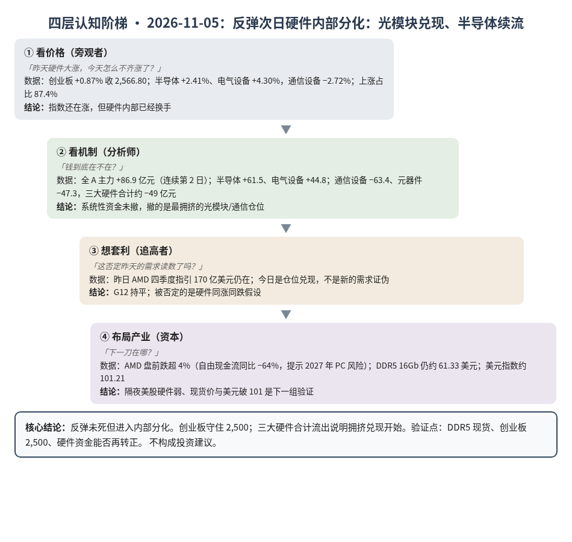
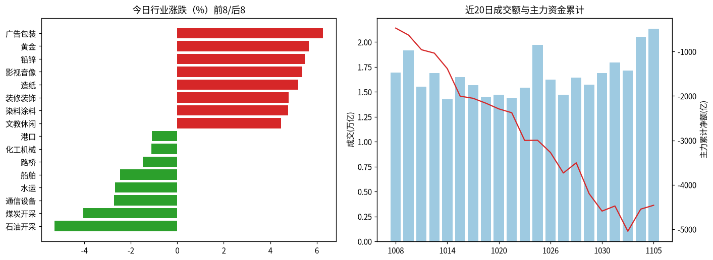
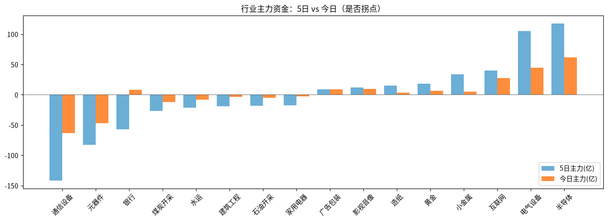

A股投研日报 · 2026-11-05（四层认知版）
- 主线
- 反弹次日硬件内部分化，光模块兑现、半导体续流，创业板守住 2,500
- 最重要变化点
- 三大硬件主力合计由昨日约 +380 亿转为约 −49 亿（通信设备 −63.4、元器件 −47.3；半导体仍 +61.5）
- 机制含义
- 需求叙事未翻，资金从"硬件一起冲"切到"兑现光模块、留下半导体/电气"
- 下一个观察点
- 11/6 DDR5 16Gb 现货较 10/30 跌超 3%（低于 59.66 美元）；美股 AMD 盘前弱能否拖累 A 股硬件
本报告为基于公开数据的研究分析，不构成投资建议。
今日市场概况
数据管道速览（Tushare 收盘数据，规则生成，正文判断见下文）
- 指数：上证指数 +0.10% 收 3,689.91，创业板指 +0.87% 收 2,566.80；深证成指 +1.19%、科创50 +1.68%、上证50 +0.09%、沪深300 +0.29%、中证500 +1.80%、中证1000 +2.12%（Tushare）。
- 量能与宽度：成交 21,351 亿元（20 日均 16,684 亿元）；上涨 4,869 家 / 下跌 625 家，上涨占比 87.4%，个股中位数 +2.0%。
- 主力资金：全 A 主力 +86.9 亿元，连续第 2 日净流入。
- 行业：主力流入居前 半导体（+61.5 亿）、电气设备（+44.8 亿）、互联网（+27.8 亿）；流出居前 通信设备（-63.4 亿）、元器件（-47.3 亿）、证券（-13.5 亿）。
- 龙虎榜 / 北向：机构专用席位合计 -8.95 亿元；沪深股通成交前五 宁德时代、中际旭创、新易盛、北方华创、中微公司（成交额≠净买入）。
变化点
方法：四层认知阶梯 + 历史周期律。数据 Tushare（见附录）。不构成投资建议。
一、世界观定位
阶段不变，回退条件不变。楚汉层无新的制度开关。世界指标今日更新未跑完（出口 IP 轮换触发 Tushare 限流后中止），五盏灯沿用 11/04 读数（3 黄 2 红：估值、中国信用）。
二、变化一（主变化）：反弹次日硬件内部分化，三大硬件合计转流出
- 看价格：创业板 +0.87% 收 2,566.80，守住 2,500；科创50 +1.68%。半导体 +2.41%、电气设备 +4.30%；通信设备 −2.72%、元器件仅 +0.23%。成交 21,351 亿元，上涨占比 87.4%，全 A 主力 +86.9 亿元（连续第 2 日）。午后创业板一度翻绿，光模块权重领跌。
- 看机制：昨日 AMD 强指引把仓位一次性打满；今日资金在硬件内部换手——半导体主力 +61.5 亿元（连续 2 日）、电气设备 +44.8 亿元（连续 4 日），通信设备 −63.4、元器件 −47.3，三大硬件合计约 −49 亿元，未达"连续第二日净流入"阈值。
- 想套利：全市场仍宽、全 A 仍流入，说明不是系统性撤退，而是兑现最拥挤的光模块/通信仓位。推断隔夜 AMD 因自由现金流同比降 64%、并提示 2027 年 PC 出货两位数下滑风险，美股盘前跌超 4%（源），可能加重明日硬件分化。
- 布局产业：云端需求层（G12）没有被今天的内部分化否定；被否定的是"硬件板块同涨同跌"的交易假设。
判断：主要矛盾从"需求还在不在"切到"仓位拥挤后谁先兑现"。创业板守住 2,500 支持反弹未死，但三大硬件合计流出说明高位扩散结束。
三、变化二：弱美元叙事延续，黄金连涨、美元未破 101
美元指数日内跌 0.26% 至 101.21（源），仍在 101 上方；现货黄金突破 4,140 美元、日内约 +2%（源）。A 股黄金行业 +5.65%，主力 +6.4 亿元（连续 3 日）。
判断：弱美元继续托贵金属，但"本周跌破 101"尚未兑现；对成长股估值是尾风，不是今天主驱动。
四、上一交易日验证点回顾（11/4 → 11/5）
| 验证点 | 结果 |
|---|---|
| 创业板守住 2,500 | 命中：+0.87% 收 2,566.80 |
| 三大硬件主力连续第二日净流入（合计 > 0） | 未命中：合计约 −49 亿元（半导体续流入，通信/元器件大额流出） |
| 11/6 DDR5 16Gb 现货较 10/30 跌超 3%（低于 59.66 美元） | 待验证：11/4 读数仍 61.33 美元，今日世界指标未更新 |
| 本周美元指数跌破 101 | 待验证：最新约 101.21，未破 |
五、供应链风险敞口（人工复核版）
脚本版见 risk_section_20261105.md。口径为 GB300/NVL72 当量柜年化系统价值；Δ$ 为事件类型假设模板，仅用于排序，非预测。脚本 1 条，误匹配 1 条（宏和特种电子纱为扩产，非断供）。复核后有效断供 Δ$≈0，基线维持年化 EL 57.7 亿美元（10/21）。采集降级：GDELT 限流，巨潮公告匹配未恢复。
六、机会表（产业/环节层面，不构成投资建议）
| 环节 | 逻辑 | 证伪条件 |
|---|---|---|
| 半导体（设计/制造） | 主力连续流入，与光模块兑现形成切仓 | 创业板跌破 2,500 且半导体转流出 |
| 电气设备 | 主力连续 4 日流入，受益电网/新能源叙事 | 5 日主力由正转负 |
| 贵金属 | 美元未收回、央行购金叙事仍在 | 美元指数收回 102 以上 |
中长期展望（3–12 个月与 2027）
3–12 个月：云端需求读数（G12）仍靠财报/指引支撑，但硬件股进入"读数确认 → 拥挤兑现 → 再确认"循环；估值灯仍红，波动会大于趋势。
2027：G02（涨价靠晶圆机会成本）持平；总闸门仍是 P023（概率 0.55）。AMD 提示 PC 端风险，不直接否定数据中心层，但提醒需求结构会分层。
什么会改变展望：①DDR5 现货单周跌超 3%；②任一大云厂商下修 2027 资本开支；③美元指数快速收回 102。
七、明日/本周验证点（可证伪）
- 11/6 创业板能否继续守住 2,500；跌破则反弹叙事转震荡。
- 11/6 三大硬件主力合计是否再度 > 0（看兑现是否结束）。
- 11/6 DDR5 16Gb 现货较 10/30 跌超 3%（低于 59.66 美元）。
- 本周美元指数是否跌破 101。

一句话总结：反弹次日硬件内部分化，光模块兑现、半导体续流，创业板守住 2,500。
本报告为基于公开数据的研究分析，不构成任何投资建议。
附录：市场数据（证据底稿）


| 收盘 | 今日% | 5日% | 20日% | MA20 | 成交(亿) | |
|---|---|---|---|---|---|---|
| 上证指数 | 3,689.91 | 0.10 | 1.05 | -3.20 | 3,701.53 | 9,797.12 |
| 深证成指 | 11,471.09 | 1.19 | 2.99 | -9.11 | 11,619.21 | 6,239.99 |
| 创业板指 | 2,566.80 | 0.87 | 1.95 | -15.47 | 2,677.16 | 2,622.35 |
| 科创50 | 1,286.67 | 1.68 | 4.77 | -11.65 | 1,310.79 | 1,172.59 |
| 上证50 | 2,811.16 | 0.09 | 1.75 | 0.22 | 2,771.93 | 1,672.42 |
| 沪深300 | 4,113.41 | 0.29 | 1.77 | -4.57 | 4,126.01 | 6,220.89 |
| 中证500 | 6,740.93 | 1.80 | 4.45 | -7.00 | 6,729.94 | 3,888.48 |
| 中证1000 | 6,650.14 | 2.12 | 4.25 | -6.84 | 6,645.66 | 4,196.64 |
行业资金热力（按5日主力净额排序，前8/后8）
| industry | 今日% | 5日% | 20日% | 今日主力(亿) | 5日主力(亿) | 资金连续天数 |
|---|---|---|---|---|---|---|
| 半导体 | 2.4 | 5.8 | -9.2 | 61.5 | 117.6 | 2.0 |
| 电气设备 | 4.3 | 11.0 | -1.0 | 44.8 | 105.1 | 4.0 |
| 互联网 | 4.4 | 9.1 | 11.1 | 27.8 | 39.8 | 2.0 |
| 小金属 | 3.7 | 9.2 | -12.6 | 5.3 | 34.0 | 2.0 |
| 黄金 | 5.7 | 9.7 | -3.0 | 6.4 | 18.0 | 3.0 |
| 造纸 | 5.2 | 7.7 | -0.3 | 3.8 | 15.2 | 4.0 |
| 影视音像 | 5.4 | 14.4 | 26.4 | 9.5 | 11.7 | 1.0 |
| 广告包装 | 6.3 | 9.7 | 8.6 | 9.1 | 9.1 | 1.0 |
| 通信设备 | -2.7 | -9.1 | -31.7 | -63.4 | -141.6 | -1.0 |
| 元器件 | 0.2 | -0.4 | -20.3 | -47.3 | -82.9 | -1.0 |
| 银行 | -0.6 | -2.3 | 2.6 | 8.3 | -57.1 | 1.0 |
| 煤炭开采 | -4.0 | -6.6 | -8.8 | -12.0 | -26.7 | -16.0 |
| 水运 | -2.7 | 1.6 | -4.9 | -8.4 | -21.5 | -5.0 |
| 建筑工程 | 2.1 | 3.9 | -0.0 | -3.5 | -19.4 | -8.0 |
| 石油开采 | -5.3 | -7.6 | 1.9 | -4.8 | -17.9 | -4.0 |
| 家用电器 | 2.4 | 5.2 | 11.1 | -2.4 | -17.9 | -4.0 |
市场情绪时间序列（近10日）
| trade_date | 成交(亿) | 上涨占比% | 主力净额(亿) | 个股中位涨跌% |
|---|---|---|---|---|
| 20261023 | 19728.5 | 81.2 | 4.3 | 1.6 |
| 20261026 | 16230.9 | 40.4 | -274.6 | -0.5 |
| 20261027 | 14729.0 | 10.9 | -462.7 | -3.0 |
| 20261028 | 16421.0 | 74.6 | 229.2 | 1.3 |
| 20261029 | 15707.1 | 14.0 | -694.9 | -2.6 |
| 20261030 | 16877.1 | 16.0 | -391.8 | -3.1 |
| 20261102 | 17951.9 | 84.0 | 114.9 | 2.0 |
| 20261103 | 17150.9 | 37.8 | -568.2 | -0.7 |
| 20261104 | 20518.9 | 83.8 | 497.2 | 1.9 |
| 20261105 | 21351.0 | 87.4 | 86.9 | 2.0 |
今日上涨4869家/下跌625家，涨幅≥9.8% 132家、跌幅≤-9.8% 5家¹。
龙虎榜侧写：机构专用席位合计 -8.95 亿；净买入居前 顺灏股份(+1.45亿)、宁波东力(+1.14亿)、精研科技(+0.56亿)，净卖出居前 中国石油(-4.58亿)、皇台酒业(-1.33亿)、睿创微纳(-1.23亿)。 沪深股通活跃股：成交前五为宁德时代、中际旭创、新易盛、北方华创、中微公司（成交额≠净买入）。
注：¹涨跌停为按±9.8%阈值近似（limit_list_d无权限）。²行业为Tushare stock_basic分类自行聚合（sw_daily/ths_daily/行业资金流接口无权限），成交加权、剔除N/C新股，成分≥8只。³主力=大单+特大单净额（moneyflow）。⁴2024年8月起北向每日净买入停止披露，moneyflow_hsgt/hsgt_top10数值为成交口径，不可解读为净流入。⁵新闻/公告接口无权限，改用新浪财经7x24公开快讯自动抓取+人工补充。
接口状态：trade_cal:OK；stock_basic:OK；index_daily:OK；moneyflow_hsgt:OK；hsgt_top10:OK；top_list:OK；top_inst:OK；index_dailybasic:OK；新浪7x24(公开):OK 3293条（11-04 14:37 起）